Crypto & Stocks
Mira en tu reloj los precios que te importan: criptomonedas, acciones, oro y el dólar. Toca una moneda y ve su gráfico.
See the prices you care about on your watch: cryptocurrencies, stocks, gold and the dollar. Tap a coin to see its chart.
Primero la app, después la esfera. En Google Play se llaman «Cripto y Acciones en tu Reloj» y «Esfera Cripto y Acciones». Antes la app se llamaba Crypto Watch Face.
First the app, then the watch face. On Google Play they are “Crypto & Stocks Watch Face” and “Crypto & Stocks Face”. The app used to be called Crypto Watch Face.
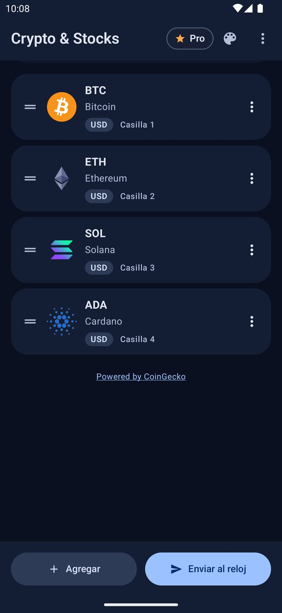
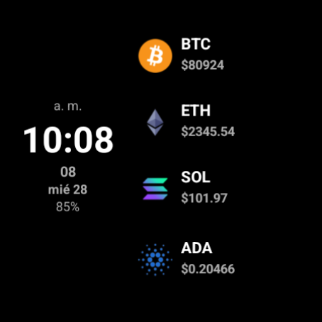
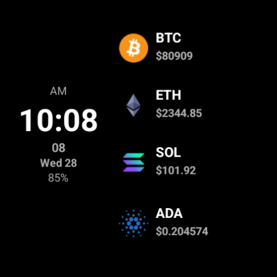
Qué puedes verWhat you can see
CriptomonedasCryptocurrencies
Por ejemplo Bitcoin, entre miles.
For example Bitcoin, among thousands.
Acciones e índicesStocks and indices
Por ejemplo Tesla, o fondos que siguen al S&P 500 o al Nasdaq.
For example Tesla, or funds that track the S&P 500 or the Nasdaq.
Oro y plataGold and silver
Precios de referencia del oro y la plata.
Reference prices for gold and silver.
El dólarThe dollar
El dólar en tu moneda: peso colombiano, mexicano, euro y muchas más.
The dollar in your currency: euro, Mexican peso, Indian rupee and many more.
Cada precio sale en la moneda que elijas. En el reloj, tus precios van en las casillas (complicaciones) de la esfera.
Each price shows in the currency you choose. On the watch, your prices appear in the slots (complications) of the watch face.
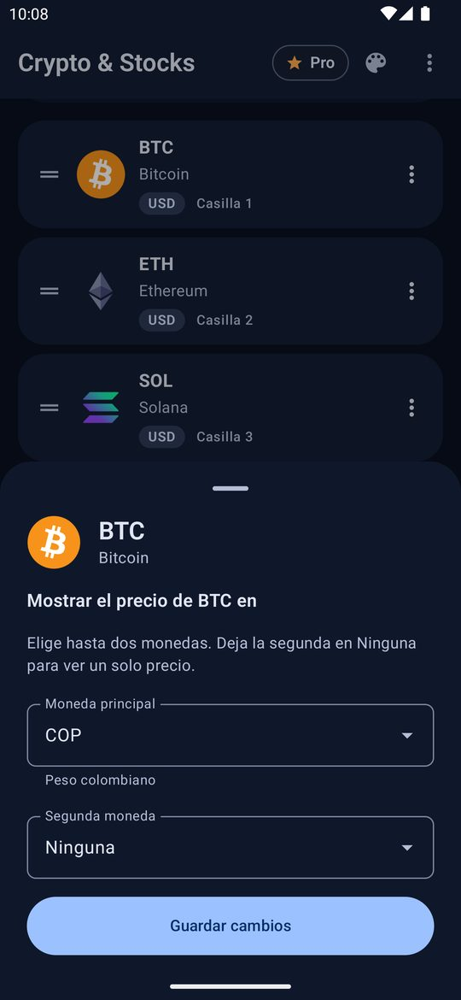
Toca una moneda y mira su gráficoTap a coin to see its chart
En la esfera, toca una moneda: se abre su gráfico de 24 horas, 7 días, 30 días o 1 año, con el máximo y el mínimo.
On the watch face, tap a coin to open its chart: 24 hours, 7 days, 30 days or 1 year, with the high and the low.
Toca el gráfico para ver el precio y la hora de ese momento.
Tap the chart to see the price and the time at that moment.
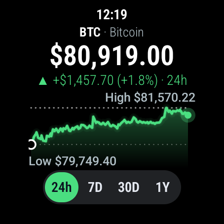
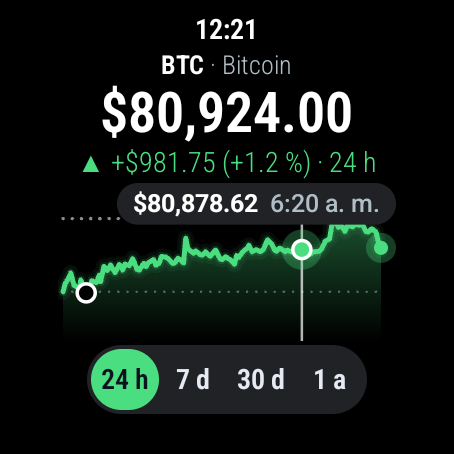
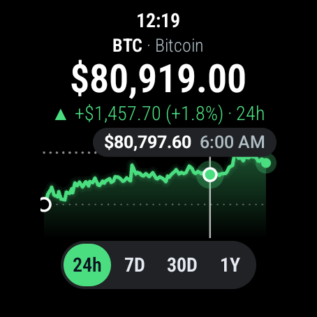
A tu gustoMake it yours
En el teléfono eliges cómo se ve el gráfico: Minimalista, Clásico o Detallado, o a tu gusto. En el reloj eliges entre 17 temas de color y la letra grande.
On your phone you choose how the chart looks: Minimal, Classic or Detailed, or your own mix. On the watch you choose from 17 color themes and a large font.
Con Pro: el estilo de esfera «Gráfico» y tu foto de fondo o uno de los 8 fondos incluidos.
With Pro: the “Chart” watch face style and your photo or one of 8 included backgrounds.
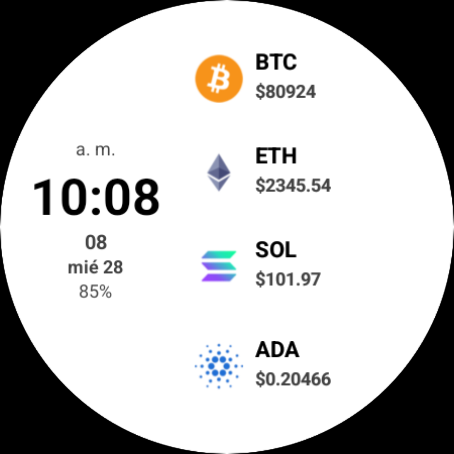
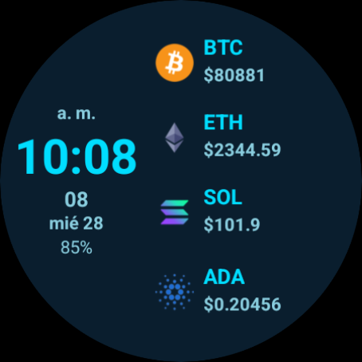
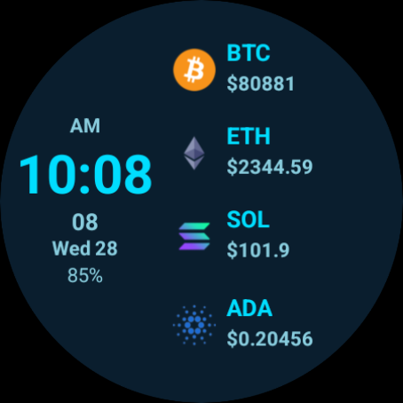
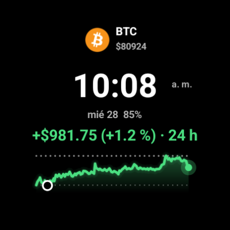
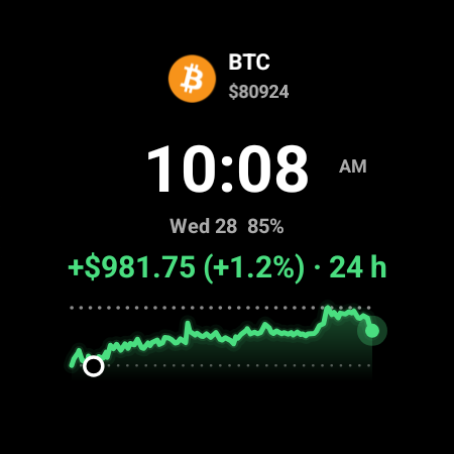
Cómo empezarHow to set it up
Son 3 pasos. La app te lleva de la mano con una guía.
It takes 3 steps. The app walks you through them with a guide.
-
Instala la app en tu teléfono y en tu relojInstall the app on your phone and your watch
Instálala en el teléfono y ábrela. Su guía te ayuda a instalarla también en el reloj: toca «Abrir en mi reloj».
Install it on your phone and open it. Its guide helps you install it on your watch too: tap “Open on my watch”.
La app en Google PlayThe app on Google Play -
Pon la esfera Crypto & StocksPut on the Crypto & Stocks watch face
Instálala en el reloj. Después, en el reloj, mantén el dedo sobre la hora, desliza hasta el final, toca «+» y elige Crypto & Stocks.
Install it on your watch. Then, on the watch, press and hold the time screen, swipe to the end, tap “+” and choose Crypto & Stocks.
La esfera en Google PlayThe watch face on Google Play -
Elige tus monedas y toca «Enviar al reloj»Choose your coins and tap “Send to watch”
En el teléfono, toca «Agregar» y elige qué precio quieres ver. El reloj actualiza los precios solo, cada pocos minutos. Necesita internet, por Wi-Fi o a través del teléfono.
On your phone, tap “Add” and choose the price you want to see. The watch updates the prices by itself every few minutes. It needs internet, over Wi-Fi or through your phone.
¿Ves la esfera, pero no tus precios? Pasa si elegiste la esfera antes de instalar la app en el reloj. Quita la esfera de tus favoritas, agrégala de nuevo y elígela. Después elige otra vez tu estilo, tema de color y letra grande.
Do you see the watch face but not your prices? It happens if you chose the face before installing the app on the watch. Remove the face from your favorites, add it again and choose it. Then choose your style, color theme and large font again.
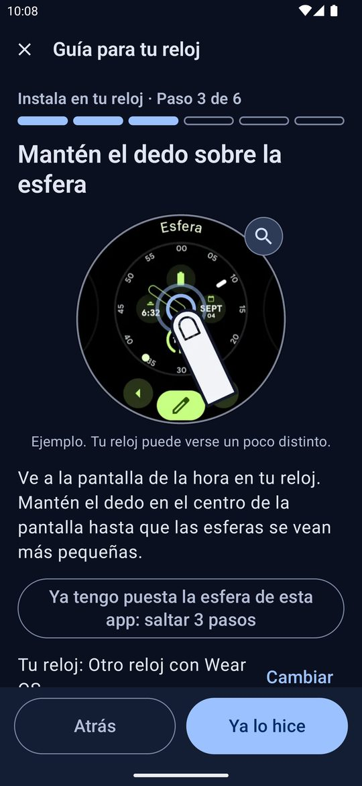
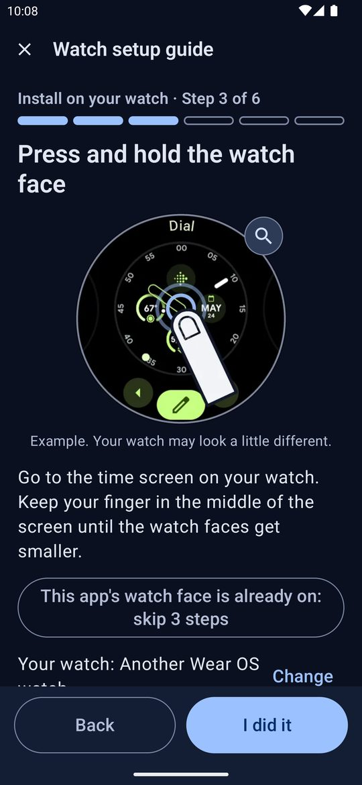
Gratis y ProFree and Pro
GratisFree
- Tu primera moneda en la esfera (casilla 1), con su gráfico.Your first coin on the watch face (slot 1), with its chart.
- Los estilos del gráfico, los 17 temas de color y la letra grande.The chart styles, the 17 color themes and the large font.
- La guía paso a paso.The step-by-step guide.
ProUn solo pago, sin suscripciónOne payment, no subscription
- Las casillas 2 a 4 y más páginas de monedas.Slots 2 to 4 and more pages of coins.
- Los gráficos de todas tus monedas.The charts of all your coins.
- El estilo de esfera «Gráfico».The “Chart” watch face style.
- Tu foto de fondo o uno de los 8 fondos incluidos.Your photo or one of 8 included backgrounds.
- Sin anuncios en la app del teléfono.No ads in the phone app.
Pro se compra dentro de la app del teléfono. También puedes ver un anuncio en video para tener Pro durante 24 horas. Sin Pro, la app del teléfono muestra anuncios. El reloj y la esfera no muestran anuncios.
You buy Pro inside the phone app. You can also watch a video ad to get Pro for 24 hours. Without Pro, the phone app shows ads. The watch and the watch face show no ads.
Bueno saberGood to know
Relojes compatiblesSupported watches
La app del reloj y la esfera necesitan Wear OS 5 o superior.
The watch app and the watch face need Wear OS 5 or later.
¿Tu reloj tiene Wear OS 3 o 4? Si ya tienes la esfera clásica, sigue funcionando gratis, con todas tus monedas. La guía de la app te muestra cómo ver la versión de tu reloj y cómo actualizarlo.
Does your watch have Wear OS 3 or 4? If you already have the classic watch face, it keeps working for free, with all your coins. The guide in the app shows you how to check your watch's version and how to update it.
Precios de referenciaReference prices
Los datos vienen de CoinGecko. En acciones, índices y oro son precios de referencia: tokens que siguen a la acción, a un fondo (ETF) o al oro. El precio de un fondo de índice no es el valor del índice en puntos.
Data comes from CoinGecko. For stocks, indices and gold these are reference prices: tokens that track the stock, a fund (ETF) or gold. The price of an index fund is not the index value in points.
Pueden diferir del precio oficial de bolsa y se mueven también de noche y los fines de semana.
They can differ from the official stock market price, and they also move at night and on weekends.
Sin cuentasNo accounts
No tienes que registrarte. Tu lista se queda en tu teléfono y en tu reloj.
You don't have to sign up. Your list stays on your phone and your watch.
Esta app solo muestra precios. No compra, no vende ni guarda dinero, y no es asesoría financiera.
This app only shows prices. It doesn't buy, sell or hold money, and it isn't financial advice.
¿Tienes una pregunta?Have a question?
Escríbenos. Te respondemos por correo.
Write to us. We answer by email.
apps.jdevelops@gmail.com